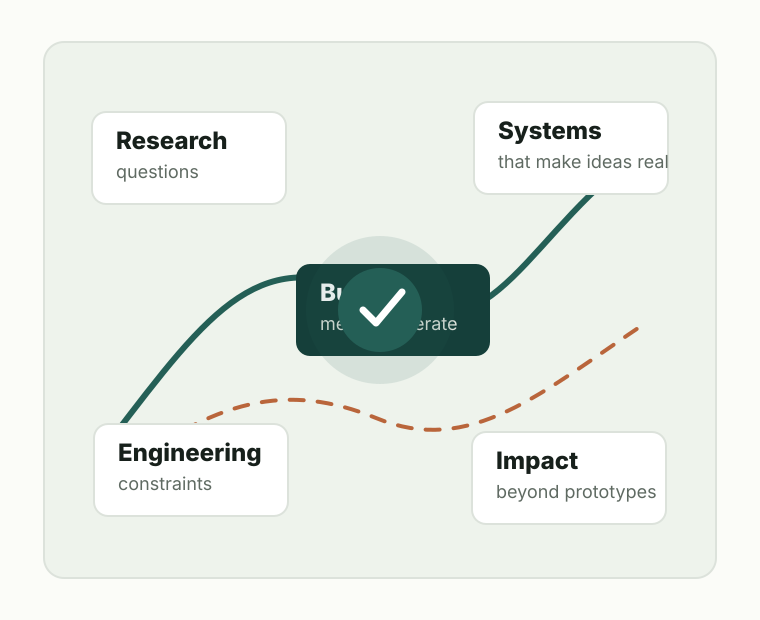

Intelligent Systems
How learning-based systems can become more capable, dependable, and useful in real technical workflows.
Combined MS&PhD Student at SNU · Former Software Engineer
I am exploring academic research, industrial research, and engineering teams where rigorous problem framing and strong implementation both matter.

About
I am a Combined MS&PhD student at Seoul National University. Before graduate study, I worked as a software engineer, where I learned to value clear interfaces, maintainable systems, careful debugging, and practical delivery.
My current direction is to use that engineering background as research leverage: building artifacts that make ideas concrete, evaluating systems carefully, and asking technical questions that matter beyond a single implementation.
Research Interests
How learning-based systems can become more capable, dependable, and useful in real technical workflows.
How software architecture, tooling, and infrastructure shape what researchers and engineers can build reliably.
How technical systems can support experts, teams, and decision makers without hiding important tradeoffs.
Engineering Background
My software engineering experience gives me a practical lens for research: I care about whether an idea survives contact with constraints, users, data, latency, failure modes, and long-term maintenance.
Selected Work
One sentence on the problem, your role, the method or system you built, and the result or current status.
One sentence on the engineering challenge, your ownership, the stack, and the user or business impact.
One sentence on why it exists, what you learned, and how it connects to your current research-engineering direction.
Future Direction
I am interested in conversations with academic labs, industrial research groups, and engineering teams working on hard technical problems where implementation quality and research depth both matter.